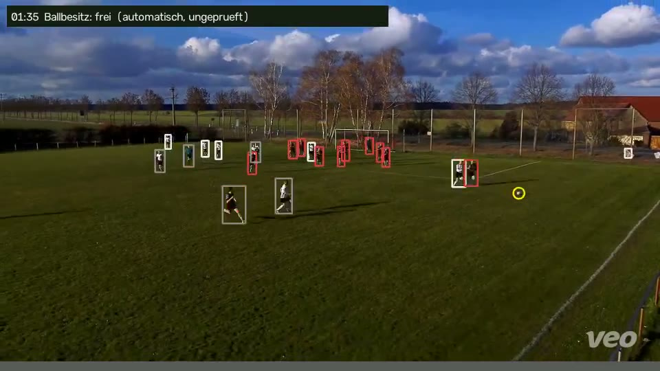
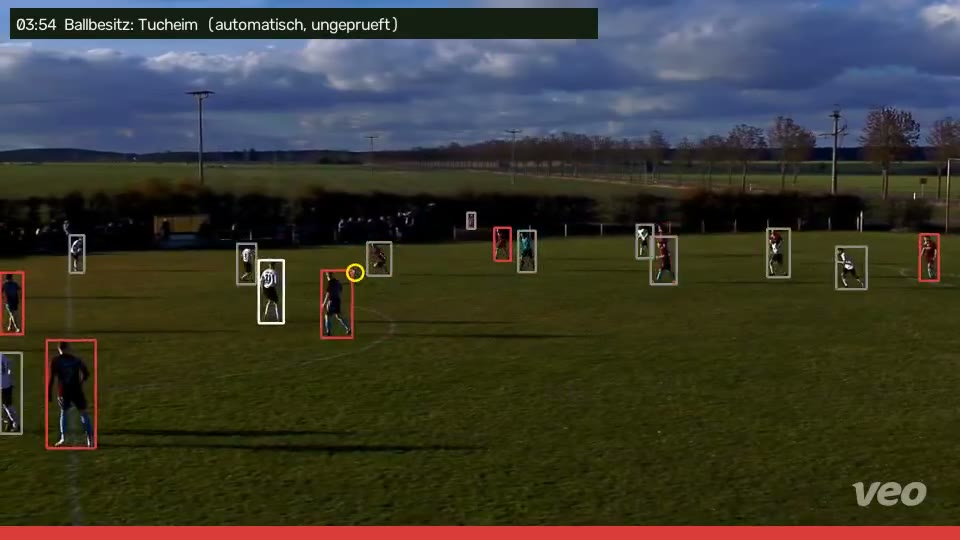

Automatische Spielanalyse
Aus einem Spielvideo entsteht ohne einen Klick ein annotiertes Video mit Kennzahlen. Gebaut für Amateurvereine mit einer Kamera am Spielfeldrand.
Spieler-Tracking
Jeder Spieler wird Bild für Bild erkannt und verfolgt. Die Teams werden pro Video automatisch über die Trikotfarben getrennt.
Ballbesitz
Wer hat wann den Ball? Eine Zeitleiste über das ganze Video, dazu der Anteil pro Team.
Pässe & Ballgewinne
Pässe werden aus Ballbesitzwechseln erkannt: angekommen oder verloren. Ballgewinne zeigen, wo das Spiel kippt.
Annotiertes Video
Teamfarben, Ball, Ballbesitz-Leiste und eingeblendete Ereignisse direkt im Video, als Datei zum Teilen mit dem Team.
Link rein. Analyse raus.
Ein Spiel liegt auf YouTube? Link einfügen, Länge wählen, starten. Das Video wird lokal geladen, analysiert und danach gelöscht. Übrig bleiben das annotierte Video und die Zahlen.
- Video wählenYouTube-Link oder eigene Datei, von 1 bis 10 Minuten.
- Automatisch analysierenSpieler, Ball und Teams werden in Abschnitten von 30 Sekunden erkannt.
- Ergebnis ansehenKennzahlen, Ballbesitz-Zeitleiste, Ereignisliste und das annotierte Video.
Fünf Minuten, ohne Mensch
Die ersten fünf Minuten eines Amateurspiels, aufgenommen mit einer Veo-Kamera. Kein Bild wurde von Hand markiert: Spieler, Teams, Ball, Ballbesitz und Pässe hat das System selbst eingetragen.
Rot und weiß umrandet: die zwei Teams, grau: nicht zugeordnet (z. B. Schiedsrichter). Gelber Kreis: der erkannte Ball. Oben links: der automatisch geschätzte Ballbesitz.

